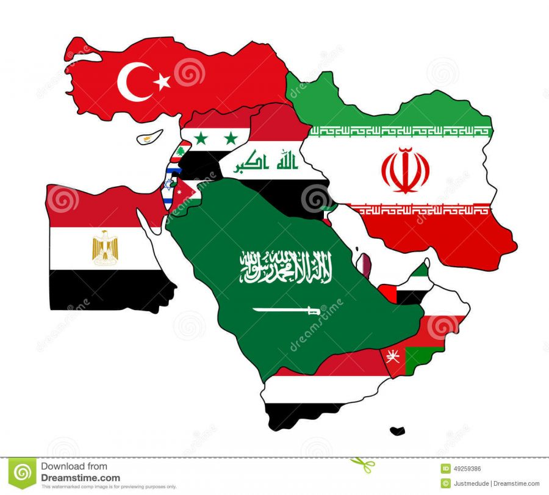
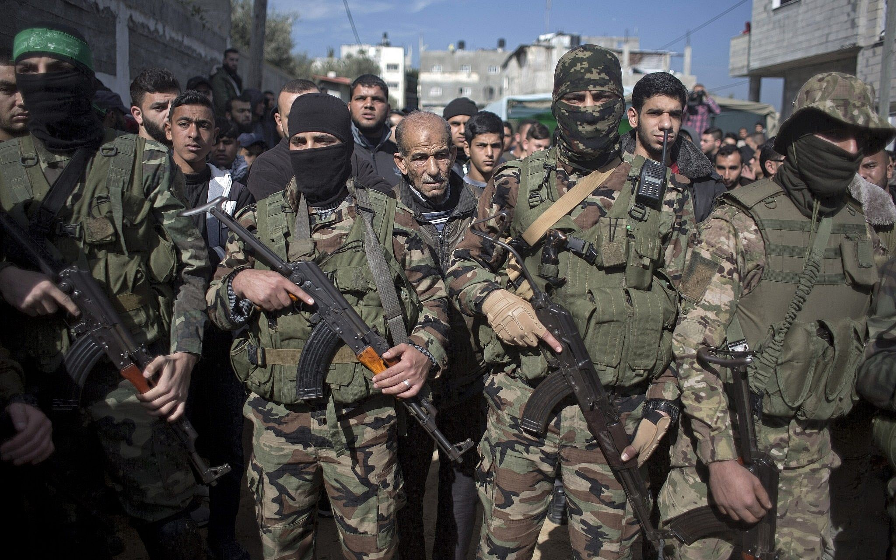
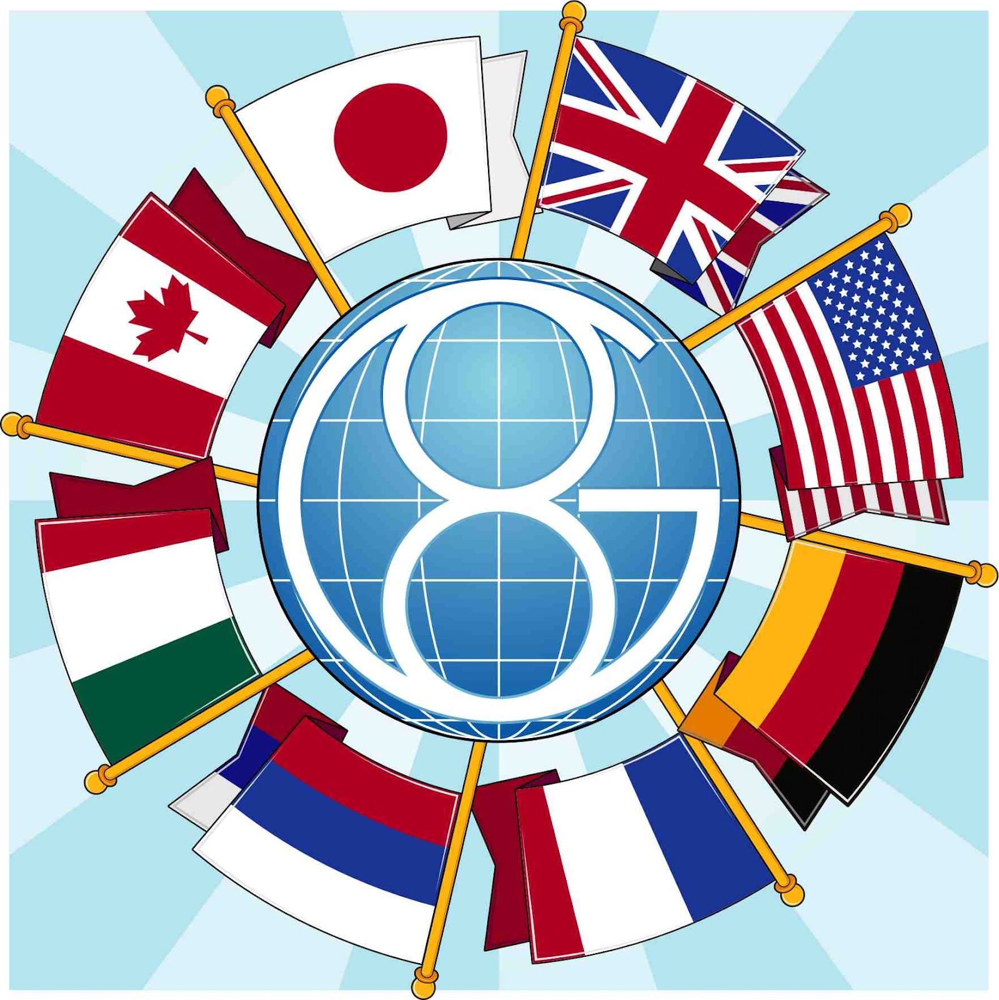

Los conflictos en el Medio Oriente involucran a una variedad de actores, que van desde gobiernos hasta grupos militantes y organizaciones internacionales.A continuación, se presentan algunos de los actores principales en los conflictos de la región:

Estados Nacionales:
Israel: Participa en el conflicto israelí-palestino y ha estado involucrado en conflictos con otros actores regionales.
Irán: Juega un papel importante en la región y se ha involucrado en conflictos en Irak, Siria, Líbano y Yemen.
Arabia Saudita: Ha estado involucrada en conflictos regionales, incluyendo la intervención militar en Yemen y rivalidades con Irán.
Turquía: Participa en conflictos en Siria y ha estado involucrada en enfrentamientos con grupos kurdos.
Siria, Irak, Líbano, etc.: Los Estados nacionales en la región también son actores clave en sus propios conflictos internos y regionales.

Grupos Militantes:
Hamas: Actúa en el conflicto israelí-palestino y controla la Franja de Gaza.
Hezbolá: Un grupo chiita libanés que ha estado involucrado en conflictos, incluyendo enfrentamientos con Israel.
ISIS (Estado Islámico): Ha sido un actor importante en la región, controlando territorios en Siria e Irak.
Al-Qaeda: Aunque originario de Afganistán, ha tenido presencia en la región y ha estado involucrado en actos terroristas.

Organizaciones Internacionales:
Naciones Unidas (ONU): Ha estado involucrada en la búsqueda de soluciones y el mantenimiento de la paz en la región.
Liga Árabe: Una organización regional que aborda cuestiones políticas y económicas en el mundo árabe.
Coalición Internacional: Una coalición liderada por Estados Unidos que ha estado involucrada en la lucha contra ISIS en la región.
Potencias Extranjeras:
Estados Unidos: Ha tenido una presencia significativa en la región y ha intervenido en varios conflictos.
Rusia: Se ha involucrado en conflictos en Siria y tiene intereses estratégicos en la región.
China: Ha buscado expandir su influencia económica en la región.